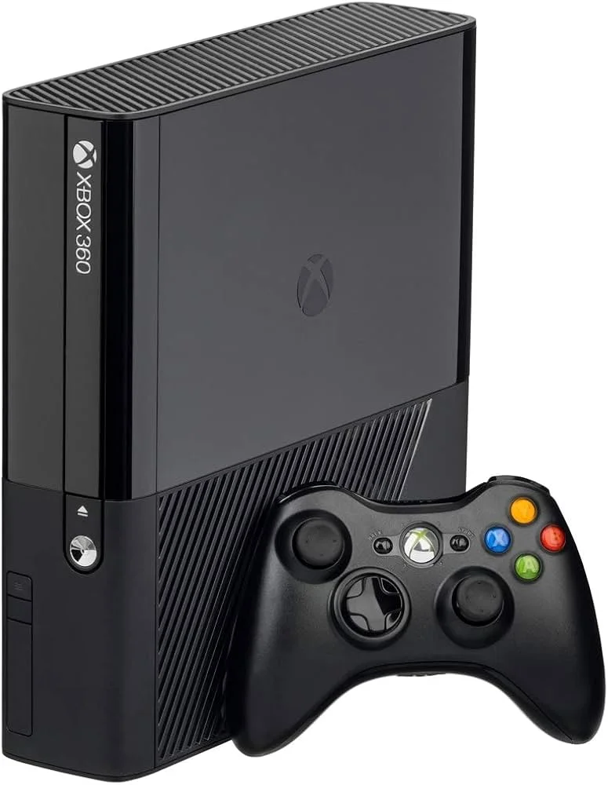
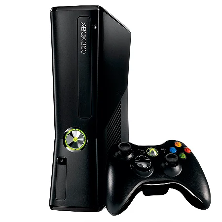

Nome: Luís Eduardo dos Santos Bonifácio
Data de Nascimento: 22/02/2007
Hobbies: Gosto de jogar, ver filmes e séries, criar histórias e personagens, ouvir músicas e mexer com TI.
Curiosidades: Tenho uma cicatriz no "Sulco Mentolabial" (a Dobra do Queixo) devido a uma pancada em uma das pernas de uma cadeira de madeira.
O meu primeiro e único videogame foi um Xbox 360 Super Slim, alguns dias depois não ligava mais, para substituir troquei pelo modelo Slim.
Enquanto estava no 1º ano do Ensino Médio, quebrei uma das lâmpadas da escola com um parafuso da carteira (mesa) no meio do intervalo lotado e até hoje ninguém descobriu que fui eu (exceto meus amigos).
Eu tenho uma caixa de sapato cheia de carrinhos da Hot Wheels, dos mais antigos, os quebrados, aos mais novos. O meu primeiro foi o "Night Burner".
Tenho Dermatite Atópica desde o nascimento, minha Mãe descobriu quando era bebê, eu estava gripado, ela me deu Amoxicilina com corante e após algumas horas meu corpo teve reação, a reação foi o que levou a descoberta definitiva da alergia em 2017/2018.
Abaixo estão os meus jogos e sagas favoritos:
Abaixo estão alguns dos meus filmes e séries favoritos:
Abaixo estão algumas das minhas músicas favoritas:
Nasci em São Bernardo do Campo no ano de 2007, mas sempre morei em Amuhadi, Diadema. Aos 6 anos, comecei a estudar na E.E Inspetor José Reinaldo Santana (Piró) no 1º ano do Ensino Fundamental, nessa época, eu tinha um dos amigos mais marcantes da minha vida, Ronaldo. Ele estudou comigo na pré-escola, no 1º e 2º ano do Fundamental, Ronaldo era um bom e estranho amigo (ele comia cola), mas depois do 2° ano do Ensino Fundamental, eu nunca mais o vi, nem nas escolas nem fora delas. Nesse mesmo tempo, eu lembro de ter ganhado uma bicicleta temática da Hot Wheels (hoje em dia está abandonada em casa) de presente de aniversário.
Meu primeiro contato com computadores foi aproximadamente em 2013/2014, quando o meu pai comprou o primeiro e único PC de casa. Esse computador é usado até hoje (o sistema sofre com a modernidade de hoje, viu?)...
Com o passar dos anos comecei a me interessar por...
Algumas imagens relacionadas à minha vida e aos meus interesses:


Gostou da página? Deixe uma mensagem!
"I like to dissect girls, do you know I'm utterly insane?" — Patrick Bateman (American Psycho)
"When you have insomnia, you're never really asleep, and you're never really awake. With insomnia, nothing's real. Everything is far away. Everything is a copy of a copy of a copy." — The Narrator (Fight Club)
"Scotland is not a real country; you are an Englishman with a dress." — Soldier (Team Fortress 2)
"The right man in the wrong place can make all the difference in the world." — G-Man (Half-Life 2)
Status atual: Criando histórias e mexendo com TI.
Todos os direitos reservados © 2007-2026 — Luís Eduardo